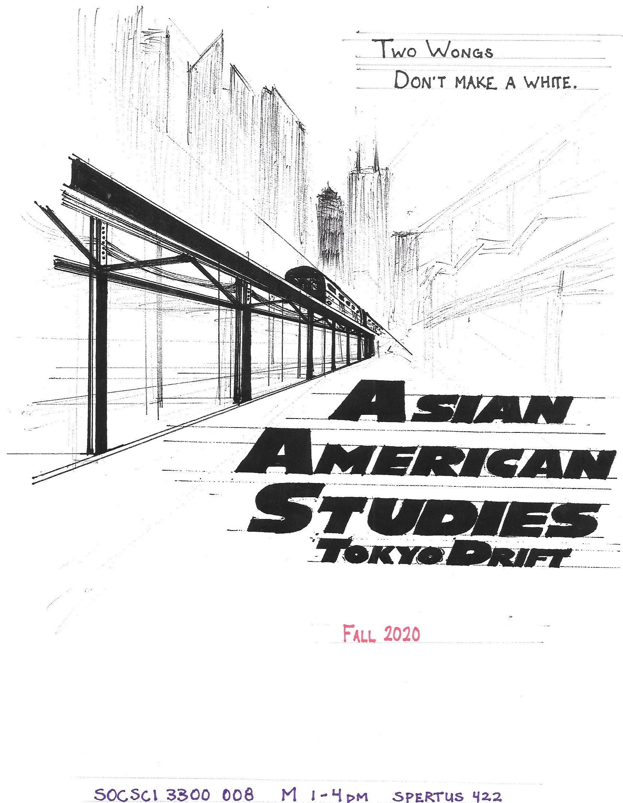
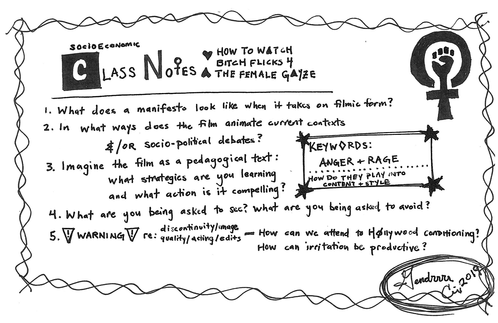

Omie Hsu.
teaching
>>>
School of the Art Institute of Chicago
>>>
University of Chicago
>>>
other
[ would gladly share syllabi upon request . some information available on course site, if applicable ]
~ hover over course titles for extras ~
>>>
Asian-American Studies: everybody was kung flu fighting
(forthcoming) fall 2021 . self-designed . undergraduate
1 .
2 .
3 .
Worry not.
This course title is both tentative and unlikely.
However, the collection of responses to an informal text message poll
taken of generous and brilliant friends about said title indexed the atmosphere of a particular moment
to a series of cascading catastrophes that felt as gratuitous as they were routinized.
[ It is mid-April of 2021 ]
An update will come with respect to the formal, administrative life of the course - probably an entirely new entry.
This listing will likely remain. For now, at least.
Maybe this is a souvenir of a kind of political moment when comedy feels fugitive, seriousness exhausting, and everything in between still pretty unbearable.
For your viewing pleasure and your thinking consternation, please hover over the three numbers, which direct to the three pages of replies.
the outgoing text
ok. taking a poll.
if I title a course next semester, "Asian-American Studies: everybody was kung flu fighting"
is it suuuuuuper f*'ed up?
and/or will i get in all the trouble?
respondent 1: well only way it could be a problem is if you have students who have had family or close ppl that died of covid?
I mean, I think it's funny but I haven't had any one get sick or die of covid in my life
So it's a 50/50
But also I love it
~~~~
r2: Lol do it
Maybe include a pic of yourself in the description haha
~~~~
r3: Hahahaha. Whatever trouble you could possibly get in would be. So. Worth. It. Like come on,
it says so much in so few words and it's attention grabbing. It's just not Hoighty Toity, but why should you have
to toit hoights? And any hiring committee who refused to hire you because of that title is not a committee you want to have to answer to.
And also, I don't know if you've noticed, but Academia is dying. So if you're going to go down with the ship, at the very least let that freak flag fly.
You might just get the right kind of attention from those who have the power to preserve a portion of it.
1/3
r4: Bahahahah I feel like the greatest danger is it would attract students you would not want to be around in a class setting
Are you really going to teach Asian American studies next quarter? That would be so wonderful!!!
~~~~
r5: hmmmm
how about just
"kung flu fighting"
actually
idk [ i don't know ]
I'm really unsure
~~~~
r6: Ohh I think given your positionality as an Asian American prof it won't be an issue
Though there is rightly a strong sensitivity around Asian politics these days so maybe a safer title would minimise that being triggered? I'm guessing you might get at least a confirmatory question from the university where you're proposing that title in any case
But even from your last Asian American studies course title that I had seen during the walkthrough game you had set up, my sense is that your clear vision from the course and generally dry and playful approach to teaching topics of critical theory comes through to your interlocutors pretty clearly, so I am not worried overall
*vision for the course
2/3
r7: First, glad you're alive
Second, too soon!
~~~~
r8: hahahahhahaha
I think maybe no
But my roomie megan suggests naming the syllabus that
~~~~
r9: It's not f*ed up
It's up to you!
What do you want to communicate?
Also you are a perfect angel
~~~~
r10: i mean! i think it's excellent, and not at all in bad taste. will you get in trouble? only time will tell
~~~~
r11: yes
lol
~~~~
r12: I mean... maybe not worth the trouble *this* time
I am *all* for a good bit. I just think you have to weigh how much bullsh*t it's worth tolerating
~~~~
r13: I love it
But you'll get in trouble
~~~~
r14: All the trouble indeed. You can *barely* make that joke in class. 🙃
3/3
>>>
Critical Game Studies: gaming the systems
spring 2021 . self-designed . undergraduate
>> course site < <
This is a class where we will think about games with respect to social and political life; it is not a game design course. It puts Game Studies and Critical Theory in conversation with each other in order to invite questions and thought about what the formal, aesthetic, historical, sociopolitical, and affective dimensions of games could teach us about the formal, aesthetic, historical, social, and affective dimensions of politics.
We will read games across genre and type - from First-Person Shooter video games to collaborative board games to Role-Playing mobile games to drinking card games (without the drinking). We will also read theory across disciplines and fields - from theories of embodiment (like queer theory or race and ethnicity studies) to debates in game studies (like ludology v. narratology) to concepts behind design elements (like game mechanics or player interaction) to questions of contemporary sociopolitical life (like critiques of capitalism or Science and Technology Studies).
Expect to read things like: José Esteban Muñoz (on queer of color performance studies) alongside Jane McGonigal (on immersive aesthetics in Alternate Reality Games), Bruno Latour (on sociology of science and technology) alongside Mary Flanagan (on critical play and radical game design), and Michel Foucault (on subjectivity and subjectivzation) alongside Anna Anthropy's Adobe Flash video game Dys4ia. Also expect to play some games and to write short, though regular, critical analyses.
>>>
Asian-American Studies: Tokyo Drift
fall 2020 . self-designed . undergraduate

>>>
research seminar, Mellon Mays Undergraduate Fellowship Program
preceptor . summer 2020
>>>
Gender and Sexuality in World Civilizations II
winter 2019 . teaching intern for prof. C Riley Snorton

>>>
Gender and Sexuality in World Civilizations I
fall 2018 . undergraduate
gender and sexuality 2018
>>>
Queer, Quare, Ku'er: on queer of color critique
spring 2018 . self-designed . undergraduate
This course invites all students interested in the field broadly defined as “queer theory” to attend — even if they do not have a background in women’s, gender, sexuality, or queer studies. It requires neither expertise nor past experience precisely because one of the questions that the class will experiment with is: “What could queer theory look like if we begin from the premise that its model subject is not white?” As such, we will try out new points of entry into analyses of concepts central to queer and critical thought, such as intimacy, power, subjectivity, politics, or sex.
From a course organized around a field inspired by and responsible to non-academic traditions of thought and politics, expect to read across many genres and forms of queer of color theorizing, from memoir to manifestos and from film to blog.
>>>
research seminar, Mellon Mays Undergraduate Fellowship Program
preceptor . summer 2017
mmuf
>>>
What was queer theory?
spring 2017 . self-designed . undergraduate
This is a class about critique. Specifically, it is organized around some working concept of “queer theory” and its guiding question and arc looks something like: “how does queer theory as a field of knowledge and a mode of inquiry mediate our relations to objects and the world and how is that mediation situated in, refracted through, and impactful of politics and history?” - but this is not a history class.
Because one way to respond to this question looks disciplinary and methodological, this class will be structured around how “queer theory” (broadly defined) has been differently distributed and taken up by various fields of inquiry and, as such, will invite guest speakers from across the Social Sciences and Humanities to lead discussions on how their fields have encountered the materials, conversations, and questions raised by queer theory.
[ title inspired by Kenneth W. Warren's What Was African American Literature? (2011) ]
>>>
Power, Identity, Resistance III
spring 2017 . undergraduate
[on Nietzsche, Arendt, Baldwin, Du Bois, de Beauvoir, Foucault]
>>>
research seminar, Mellon Mays Undergraduate Fellowship Program
preceptor . summer 2017
mmuf2017
>>>
Asian-American Studies (not quite introductory)
fall 2016 . self-designed . Undergraduate

painting: "mah jong" by Fei Lu @feiluart
>>>
game design, Game Changer Chicago
2016 . Center for Interdisciplinary Inquiry and Innovation in Sexual and Reproductive Health
Center for Interdisicplinary
>>>
Power, Identity, Resistance I
fall 2015 . undergraduate
[on Rousseau, Smith, Marx, Mauss]
>>>
Power, Identity, Resistance III
spring 2015 . undergraduate
[on Kant, Nietzsche, Foucault, de Beauvoir, Fanon]
>>>
Power, Identity, Resistance I
fall 2014 . teaching intern for prof. John MacAloon
[on Smith, Marx, Durkheim]
>>>
Advanced Theories of Sex and Gender
winter 2014 . co-taught with prof. Lauren Berlant . collaborative designed . graduate and undergraduate
Lauren Berlant taught me how to have pedagogy.
>>>
Power, Identity, Resistance II
winter 2014 . teaching intern for prof. Birte Löschenkoh
[on Hobbes, Locke, Rousseau, Hegel, Wollstonecraft]